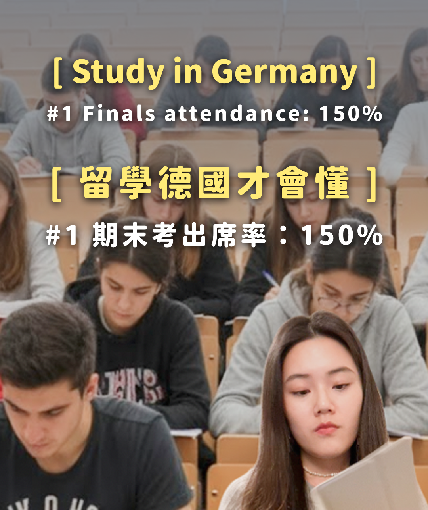
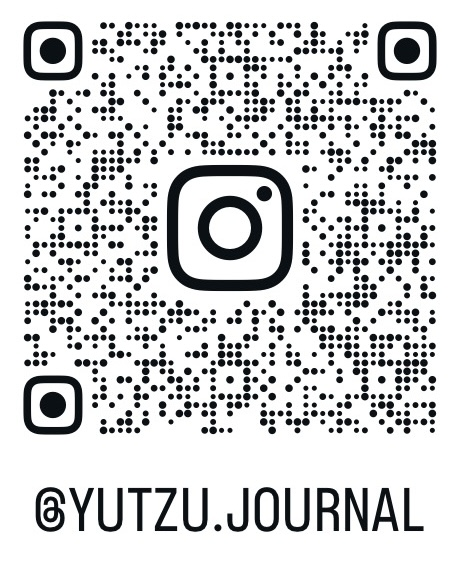

Yutzu
Chen
5 years of experience as a product manager with strength in creating user-centered products, improving with data and experimentation, and increasing efficiency with AI/LLM workflows.
B2B / B2C SaaS
Strong focus on user experience, data, experimentation, and AI / LLM products.
About me

I connect users, data, and product
I'm a Product Manager with end-to-end experience from discovery through launch and post-release iteration. I've worked across Taiwan and Germany - launching LINE Invoice and running experimentation at Holidu.
I scaled a product from 0 to 700k users in one year, reduced onboarding drop-off from 64% to 20%, conducted 50+ user interviews, and built AI workflows that analyzed 20k+ customer reviews. I like building things that actually reduce someone's real problem.
Product ownership
0 -> 1 launch and beyond. I hold the thread between strategy, teams, and shipping.
Data & experimentation
A/B tests, funnels, dashboards. Numbers explain behaviour and give direction for iteration.
AI & LLM
LLM workflows that save teams time and make complex work more scalable.
User Experience & UX
50+ interviews, customer journey maps, and wireframe/prototype building. Solving the right problem first.
How I work
How I work in product
Designing a Financial Tool Inside a Messaging App
Taiwan's digital invoice adoption was stuck around 30% despite years of government promotion. Most people didn't know how to start.
End-to-end product discovery to delivery: market research, positioning, roadmap, launch, and post-release growth.
- Found 70% of potential users had never tried any existing solution. The problem was adoption, not competition.
- Built a two-track strategy: simplify onboarding for new users, add unique features for experienced ones.
- Coordinated 10+ cross-functional teams from strategy through launch.
- 0 → 700k+ users in one year
- 2022 Top 5 users' favorite app in LINE app
- Won 2022 LINE Taiwan Project Award
- Onboarding experience: reduced drop-off from 64% to 20%

Building a Voice of Customer Intelligence System
Hundreds of customer reviews arrived weekly across multiple platforms - multilingual, fragmented, and largely unread.
Designed and built the system end-to-end, treating PMs as the primary users and designing for their real weekly workflow.
- Built an LLM pipeline that aggregates reviews from different soruces.
- The system auto-translates, detects themes, and runs sentiment analysis.
- Added a searchable database and an AI chat for deeper exploration.
- 20k+ multi-channel reviews analyzed in one unified system
- Weekly reporting fully automated - no manual work
- Surfaced recurring bugs teams couldn't see before
- Enabled faster, evidence-backed product prioritization
Experimentation Design: From Hypothesis to Impact
Not every experiment solved the same problem. Some needed small UI changes for clarity, while others had to validate bigger product directions before more investment.
Experiment design, hypothesis definition, KPI and tracking setup, result analysis, and iteration across customer-facing surfaces.
- Defined clear, testable hypotheses that connected the experiment to a real user problem and a measurable outcome.
- Aligned primary and secondary metrics to the hypothesis and business goals, and worked with design, engineering, and data teams to track results correctly.
- Used dashboards to judge whether each test should ship, iterate, or stop based on the results.
- >7% conversion uplift across multiple feature iterations
- 10+ A/B testing winners delivered across customer-facing surfaces
- Created a clearer way to explain experiment decisions across product, design, engineering, and data teams
- Built dashboards that helped the team decide whether to ship, iterate, or stop
User Research: Choosing the Right Method at the Right Product Stage
User research was needed at different product stages, but the right method depended on the question: exploration, explanation, validation, comparison, or usability.
PM / UX researcher - planned the research goal, chose the method, prepared materials, conducted studies, and turned findings into product decisions.
Used exploratory interviews, post-launch product research, concept validation with wireframes, questionnaire-based design comparison, and usability testing to help teams understand users and reduce decision risk.
- Helped teams choose the right research method for each product stage
- Explained user behavior that analytics alone could not answer
- Validated product concepts before heavier design and engineering investment
- Turned user insights into clearer product decisions and priorities
Shipping an AI Feature: Natural Language Filters
Users describe what they want in natural language, but website filters are structured. If the AI mapped requests incorrectly, users would see irrelevant results and lose trust.
Built the evaluation, metrics, and monitoring loop around the feature so the team could test prompt changes, measure quality, and improve it after launch.
- Created a prompt comparison workflow that checked user input, expected filter mapping, AI output, and similarity score.
- Prepared benchmark answers for representative requests to compare prompt versions and catch regressions.
- Built rollout dashboards to monitor input patterns, match quality, missing filters, and recurring user needs.
- Reduced prompt testing time by around 80%
- Improved visibility into AI quality and regressions
- Identified missing filters and recurring user needs from real usage
- Turned the launch into a continuous improvement loop
Scaling Product Operations with Automation
Manual translation, A/B test documentation, and Jira backlog noise consumed PM and engineering time that should have gone to actual product work.
Designed and built all four automation pipelines: from identifying the problem through implementation and rollout.
- OpenAI API → auto-upload translation pipeline
- Jira automation creating structured experiment docs on ticket status change
- Slack announcements on experiment launch
- Lifecycle automation that closes stale tickets with no response
- Documentation for self-service troubleshooting
- 80% reduction in translation processing time
- 70% of the ticket volume resolved through self-service
- Reduced repetitive support load for the whole team
- Cleaner backlog - stale tickets no longer clog prioritization
How I got here
Experience & education
Product Manager · Part-time
Drove experimentation and AI workflow projects across product teams at Holidu. Turned business goals and user needs into clearer product decisions, and turned messy operations into automations.
- Delivered multiple features driving >7% conversion uplift - translated user insights into requirements, validated via A/B testing.
- Built an LLM-based customer feedback platform analyzing 20k+ multi-channel reviews and automating weekly reporting.
- Developed LLM evaluation framework to systematically score model outputs, improving QA efficiency significantly.
- Built automated translation workflow integrating OpenAI APIs - reduced manual effort by ~80%.
- Implemented a UX research tester acquisition pipeline; gained 300+ real users for usability testing.
Product Manager
Led LINE Invoice from discovery to launch inside one of Taiwan’s most-used platforms. Combined market research, user interviews, and product strategy to turn a government-backed service into something people actually used.
- Led LINE Invoice launch - defined positioning and GTM strategy, scaled to 700k+ users in 1 year.
- Defined product roadmap with stakeholders; collaborated with 10+ cross-functional and international teams.
- Conducted 50+ user interviews; reduced onboarding drop-off from 64% to 20% via data-driven changes.
- Maintained Grafana dashboards, wrote SQL queries to analyze usage and support decisions.
Product Manager & Team Lead - ML Model Enhancement
Managed AI model improvement projects across multiple LINE products. Translated model performance issues into structured testing plans, accuracy gains, and better operational visibility.
- Led central AI enhancement team supporting search, recommendation, and ML models across News, eCommerce, and Customer Service.
- Led AI projects improving image recognition models to >90% accuracy.
- Increased news tagging model precision by 204% through structured testing and error analysis.
- Improved AI chat answer accuracy by 31% via categorization system improvements.
- Improved VOC AI filter accuracy by 22.5% - helped Customer Service team identify urgent daily cases.
- Established search quality testing SOP and reporting structure.
Business Development & Marketing Intern
Worked on partnership and growth initiatives for Kdan Mobile. Enhanced advertising performance by doing keyword research and campaign planning.
- Cold outreach for partnerships with foreign e-commerce companies; designed auto-reply email flows with UX thinking.
- Built keyword lists with Ahrefs; developed advertising strategies for Chinese, English, and Japanese markets.
MSc Management & Digital Technologies
This degree deepened my thinking of management, digital innovations, and AI. My thesis focuses on systematically mapping AI agents with LLM-assisted extraction.
- Thesis: Mapping AI agents - a systematic review using LLM-based extraction.
Bachelor's, International Business
Built my foundation in business strategy and market thinking here. The program became the base layer for my later move into product management.
Exchange Student — Faculty of Management, Economics & Social Sciences
This exchange experience was my first deeper exposure to living and studying in Germany. It shaped how I think about working across cultures and systems, and influenced the international direction of my later career choices.
Beyond the PM
I document what I find — and share it
On Instagram, I share what I notice through product thinking, career growth, and life between Taiwan and Europe. I write about studying and working in Germany, building small systems for myself, navigating career changes, and the quiet thoughts that come up along the way.
I travel, observe, ask questions, and try to turn those notes into something useful for people who are also figuring things out. I share small reflections and practical ideas that can make someone feel a bit less alone, and a bit more clear about their next step.
@yutzu.journal

Contact
Let's build something worth using
Looking for a PM who connects user needs, business goals, data, and AI? Let's talk.